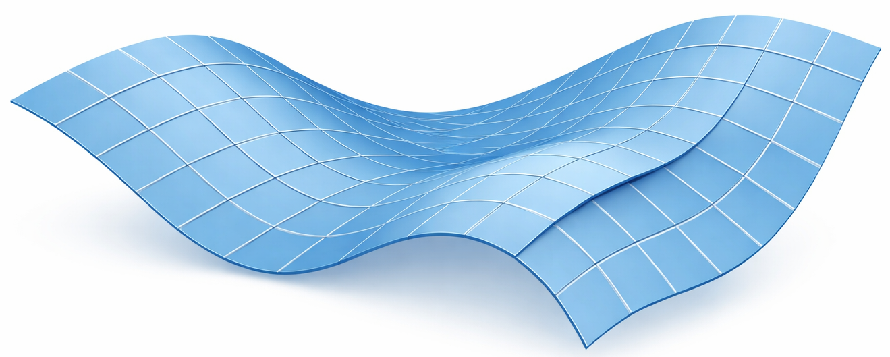

Toward Identifiable Sparse Autoencoders
When are the dictionaries and sparse codes learned by SAEs actually recoverable?
Recently, sparse autoencoders (SAEs) have emerged as an attractive tool for interpreting and interacting with representations in practical neural networks. While it is common empirical folklore, we also show theoretically that SAEs are highly unstable: different training runs are likely to produce different concept dictionaries and sparse codes. We characterize the model properties that hinder the stability of real-world SAEs, and address each of these problems through minimal changes to the architecture and training procedure. Together, these changes yield two versions of an identifiable SAE (iSAE), a variant of the standard TopK SAE with lower reconstruction error and improved stability. We explain this improvement theoretically by connecting SAEs with traditional dictionary learning approaches, and show that the dictionaries learned in practice satisfy an approximate restricted isometry condition, rendering the corresponding sparse codes in those models near-identifiable.

From the original paper (Nelson, Karaletsos & Locatello, 2026). Highlights added for this walkthrough.
Step 01 — (a) The approximation is good enough The dark-blue nonlinear manifold of activations is approximated by light-blue linear patches — each patch is one local sparse-coding regime. Identifiability first requires that approximation be faithful: a single patch must reconstruct the activations that land on it with low reconstruction error, so the linear picture is actually valid where the data lives.
Step 02 — (b) The manifold is sampled densely enough A patch can only be pinned down where there are enough observed activations to constrain it. Along the rising, densely-tiled stretch of the surface, the manifold is sampled densely: every tile sees enough data to estimate its atoms, so the local dictionary is determined rather than guessed.
Step 03 — (c) Co-occurring concepts are distinct enough (aRIP) Where the surface folds and patches crowd together, the active atoms risk sitting at small angles to one another — many codes then explain the same x. The approximate restricted isometry property (aRIP) asks that co-occurring atoms stay near-orthogonal on the supports actually observed, so the code that explains an activation is essentially pinned down.
Step 04 — (d) Co-occurrence patterns are diverse enough Across the far stretch of the surface, tiles take many different orientations — the supports co-occur in diverse patterns rather than always firing together. That diversity is what lets each patch be identified separately; when all four ingredients hold, the individual patches are identifiable, rendering the whole SAE statistically identifiable.
Introduction
Sparse autoencoders decompose a high-dimensional representation into a sparse linear combination of concepts drawn from a large, learned dictionary. Their simplicity and well-characterized engineering (Gao et al. 2024) have made them a standard interface for post-hoc interpretability and steering of neural networks (Bricken et al. 2023; Cunningham et al. 2024), where the appeal is a monosemantic decomposition. Most of this work rests, implicitly, on the assumption that the learned decomposition corresponds to stable structure in the underlying representation.
That assumption is fragile. Two SAEs trained on the same data are not guaranteed to recover the same dictionary (Song et al. 2025), nor the same sparse codes (Paulo and Belrose 2025) — a non-identifiability reminiscent of disentangled representation learning (Locatello et al. 2019). This paper asks, and partially answers, the “bare-minimum” question: under what conditions are the atoms and codes learned by an SAE in fact statistically identifiable?
A claim that deserves a caveat lives in a margin footnote.1
1 Our analysis is for a fixed data distribution P(x): the aRIP condition we introduce holds where data is actually observed, not for every possible signal as in the classical RIP.
Setup: SAEs as dictionary learning
We follow the standard near-linear SAE. For an activation x \in \mathbb{R}^N, the model encodes a k-sparse code z \in \mathbb{R}^K (with K \gg N) and reconstructs
z = \sigma\!\left(W(x - b)\right), \qquad \hat{x} = D z + b',
where W \in \mathbb{R}^{K \times N} is the encoder, D \in \mathbb{R}^{N \times K} the learned dictionary of atoms, and b, b' are bias terms. Parameters minimize the reconstruction loss \lVert x - \hat{x} \rVert_2^2. The dominant choice for the sparsifier \sigma is the TopK function (Makhzani and Frey 2013), which keeps only the k largest coefficients; this TopK SAE additionally ties b = b' (Gao et al. 2024).
It is worth tracing one activation through that pipeline. A single hidden-layer activation x \in \mathbb{R}^N is the raw, dense, entangled object we want to interpret — many concepts are superposed in its coordinates. The encoder maps it to a much higher-dimensional pre-code over an overcomplete dictionary (K \gg N); the sparsifier \sigma then keeps only the k largest coefficients (TopK) — or the k largest in magnitude (AbsTopK), which the iSAE adopts so atoms can carry negative loadings — zeroing everything else, so only a handful of atoms remain active. Those active atoms are summed with their coefficients to reconstruct \hat{x} = Dz + b'. Training minimizes \lVert x - \hat{x} \rVert_2^2, so D and W are shaped only by reconstruction — not by any requirement that the decomposition be unique.
That last point is the obstacle the rest of the paper is built around. When the active atoms are nearly parallel, several different sparse codes reconstruct the same x, and the support is unstable across runs. When the observed supports instead act like a near-isometry, the code that explains x is essentially pinned down. The paper’s contribution is to make that second, near-orthogonal picture an enforceable training condition.
Why identifiability is hard here. The dictionary D is heavily overcomplete, so the classical restricted isometry property would have to hold for all \binom{K}{k} subsets of atoms — combinatorially intractable to enforce or even verify. Compressed sensing (Candès et al. 2006) hits the same wall.
We adopt a definition of identifiability borrowed from sparse coding rather than from human interpretability: an SAE is identifiable if, up to permutation and sign, the encoder and dictionary are recovered consistently across runs. A first result is sobering — even a model that learns a perfectly stable dictionary need not learn stable codes (Theorem 3.2, the identifiability impossibility result): there exists a second encoder achieving the same reconstruction error whose sparsity patterns disagree with positive probability.
Approach: approximate RIP and the iSAE
The classical sufficient condition for unique sparse recovery is the restricted isometry property (Candès et al. 2006): the dictionary acts as a near-isometry on every k-sparse vector,
(1 - \delta)\,\lVert z \rVert^2 \;\le\; \lVert D z \rVert^2 \;\le\; (1 + \delta)\,\lVert z \rVert^2 .
Because enforcing this over all subsets is intractable, we relax it to an approximate RIP (aRIP): the isometry need only hold for the supports actually observed in the code distribution P(z). For a support set S of atoms with Gram matrix G_S = D_S^\top D_S, deviation from isometry is measured by R_{\mathrm{aRIP}}(S) = \frac{1}{|S|}\sum_i (\lambda_i - 1)^2 = \frac{\mathrm{tr}(G_S^2)}{|S|} - 1, where \lambda_i are the eigenvalues of G_S. Using a Jacobian-style estimator this becomes a cheap, differentiable regularizer:
\mathbb{E}_S\!\left[R_{\mathrm{aRIP}}(S)\right] = \mathbb{E}_S \, \mathbb{E}_{n_S}\!\left[\frac{\lVert D_S^\top D_S\, n_S \rVert^2}{|S|}\right], \qquad n_S \sim \mathcal{N}(0, I_{|S|}),
with the relevant supports chosen as the largest-2k coefficients of the unsparsified code, so the most “interactive” (near-parallel) pairs of atoms are exactly the ones penalized. Under sufficient richness and diversity of the support distribution, satisfying aRIP renders the sparse codes near-identifiable (Theorem 3.6).
Intuitively, the aRIP term moves the dictionary between two regimes. Under a plain TopK support, the active atoms can sit at a small angle to one another, so many codes fit the same x and the support is unstable across runs. The regularized iSAE pushes the active atoms toward near-orthogonality (approximately satisfying RIP), so the code that explains x is essentially pinned down and becomes near-identifiable.
The iSAE addresses the instability of TopK SAEs through three minimal changes :
- Bidirectional features — replace TopK with the absolute-value AbsTopK activation (Zhu et al. 2025) \big(\mathrm{AbsTopK}_k(u)\big)_i = u_i for i among the k largest |u_i|, allowing negative loadings and increasing the effective capacity of the dictionary at the same parameter count.
- aRIP regularization — add the term above to the training loss (AbsTopK \to iSAE), pushing the learned dictionary toward the isometry condition.
- Multi-step encoding (iSAE-ME) — a LISTA-style iterative encoder (Gregor and LeCun 2010) replacing the single near-linear pass, improving the codes beyond what an amortized encoder can express.
Results
Across synthetic, language (Pythia-160M (Biderman et al. 2023) on The Pile), and vision (DINOv2-Base (Oquab et al. 2024) on ImageNet-1k) settings, the iSAE variants improve dictionary stability while matching or beating TopK on reconstruction. On synthetic i.i.d. data, the dictionary cosine similarity across re-trainings (DCS, mean absolute cosine similarity after Hungarian matching, higher is better) rises sharply from the TopK baseline to the regularized and multi-step variants (Table 1).
| Model | DCS \uparrow |
|---|---|
| TopK | 0.606 |
| AbsTopK | 0.935 |
| iSAE | 0.933 |
| iSAE-ME | 0.999 |
On Pythia-160M activations, the downstream SAEBench evaluation shows iSAE-ME attaining the lowest cross-entropy loss while remaining competitive on probing metrics; the aRIP regularization (AbsTopK \to iSAE) consistently helps:
| Model | CE Loss \downarrow | Sparse Probing \uparrow | SCR \uparrow | TPP \uparrow |
|---|---|---|---|---|
| TopK | 3.974 | 0.909 | 0.381 | 0.043 |
| AbsTopK | 4.004 | 0.906 | 0.330 | 0.031 |
| iSAE | 4.003 | 0.907 | 0.348 | 0.043 |
| iSAE-ME | 3.906 | 0.908 | 0.293 | 0.044 |
A nuance: the highly expressive multi-step encoder, while best for reconstruction and CE loss, can worsen code identifiability on real LLM and vision activations even as it lowers reconstruction error — suggesting that the remaining barrier for iSAE-ME is one of optimization rather than encoder expressivity. All variants train 4096-atom dictionaries on 512M Pythia-160M activations; the aRIP term adds negligible overhead, while the multi-step encoder increases training time by about 10–15% — roughly five hours for iSAE-ME (including LLM inference) versus about four hours for the TopK baseline.
Conclusion
Treating SAEs as estimators for dictionary learning makes their instability legible: the approximate RIP gives a measurable, enforceable condition under which both the dictionary and the sparse codes are near-identifiable. The resulting iSAE and iSAE-ME models inherit lower reconstruction error and markedly more stable codes than standard TopK SAEs (Gao et al. 2024), while the paper’s identifiability impossibility result (Theorem 3.2) clarifies why dictionary stability alone was never enough to guarantee stable codes. References appear in the margin.
Citation
@article{nelson2026,
author = {Nelson, Walter and Karaletsos, Theofanis and Locatello,
Francesco},
title = {Toward {Identifiable} {Sparse} {Autoencoders}},
journal = {arXiv preprint},
date = {2026-05-29}
}